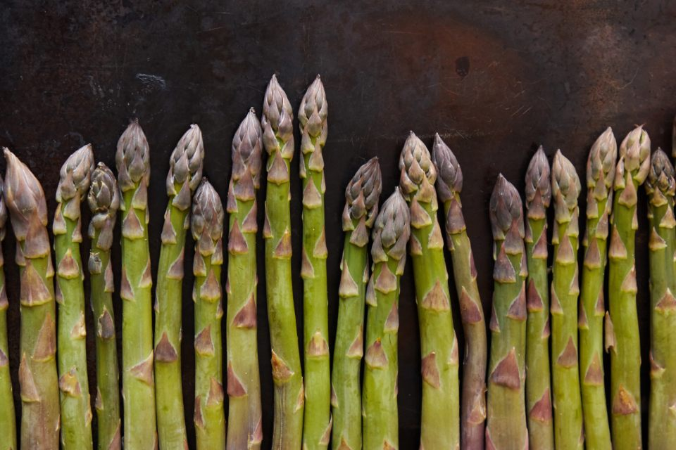
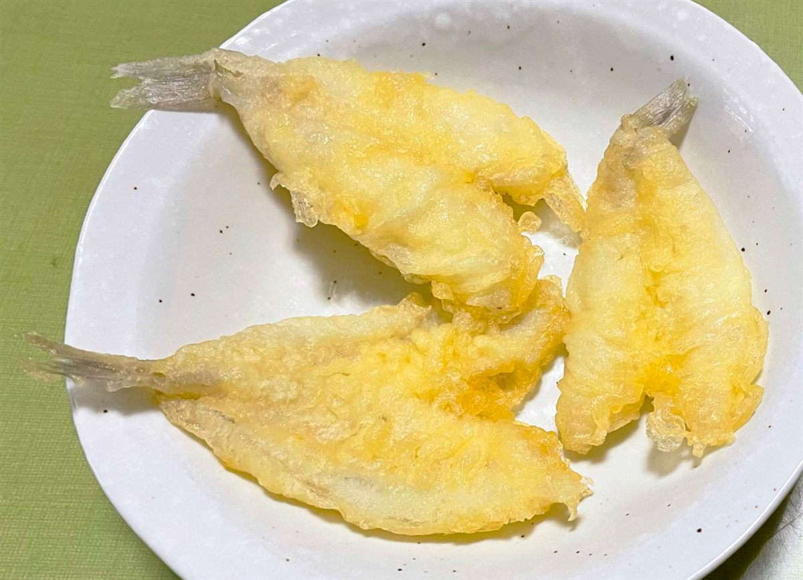
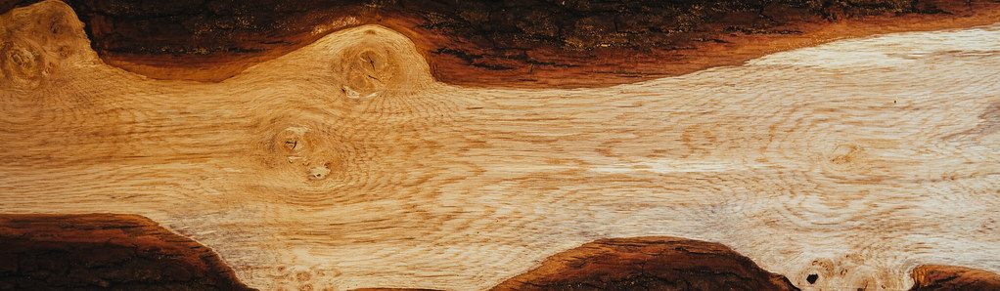

千葉県柏市 — 天ぷら専門店
天和
柏に、静かに構える一軒。
暖簾の向こうに、大人だけの時間が灯っています。
千葉県柏市。日常の喧騒から一歩離れたカウンターで、旬の食材と大将との会話を静かに味わう――そんな一夜のための天ぷら専門店です。当日のご案内が難しいことも多い人気店ゆえ、お早めのご予約をおすすめします。
電話でご予約 04-7107-8838Counter
カウンターの静けさ
目の前で仕上がる、揚げたての一瞬。
天和は、大将と客がひとつのカウンターを挟んで向き合う、割烹スタイルの天ぷら店です。衣を纏った食材が油の中で色づいていく音、立ちのぼる香り、皿に置かれる瞬間――そのすべてを間近で味わえるのが、このカウンターの醍醐味です。
けっして声高な演出はありません。灯りを落とした店内に一灯だけが皿を照らし、会話と間合いを大切にしながら、料理がひと品ずつ静かに進んでいきます。特別な時間を心ゆくまで大切にしていただけるよう、落ち着いた大人の空間づくりを心がけています。
ご来店の際は事前のご予約をおすすめします。営業時間・定休日など最新情報はお電話にてご確認ください。
★★★★★
最高の食材と最高の技。接客も最高に素晴らしい。(中略)大人の寛ぎの空間ですから。
※お子様連れでのご利用については、恐れ入りますがお電話にてご相談ください。


Ingredients
旬の食材へのこだわり
その日、その一皿でしか出会えない味。
天和の天ぷらは、決まったメニュー表をなぞるものではありません。市場に届いたその日の食材、季節の巡りに合わせて品書きが変わる――四季折々の恵みをそのつど選び抜くことが、この店のこだわりです。普段の食卓ではなかなか出会えない、珍しい食材にめぐり会えるのも楽しみのひとつです。
素材の持ち味をそのまま活かす軽やかな衣、そして「揚げたての一瞬」を逃さない提供のタイミング。大将が油の前に立ち続けているからこそ叶う、この店ならではの間合いです。
その日どんな食材と出会えるか、お召し上がりの目安につきましては、お電話にてお気軽にお問い合わせください。
★★★★★
普段食べられない高級な素材ばかり、そして衣も最高です。提供のタイミングが絶妙です。四季折々の素材を楽しめます。
★★★★★
珍しい食材が多くとても有意義な食事ができました。

Master
大将の人柄
天ぷらを、こよなく愛する人。
油の温度、衣の薄さ、食材が揚がる一瞬の見極め――そのひとつひとつに、飽くことのない探求心を注ぎ続ける人がいます。「天ぷらオタク」と評されるほどの愛情の深さは、皿の上の一品一品に静かに表れています。
けれどカウンター越しに交わす言葉は、いつも気さくで温かいもの。最初は敷居の高さを感じていたお客様も、大将との会話にふっと肩の力が抜けていく――そんな声を数多くいただいています。厳かな空気の中にも、人懐っこい笑顔がある。それが天和という店の、いちばんの魅力かもしれません。
★★★★★
柏で1番美味しい天ぷら屋さん。店主さんは、天ぷらオタクで天ぷら愛に溢れてます!
★★★★★
敷居高く感じてたけど、店主は気さくで楽しく過ごせました。
Voices
常連・お客様の声
一枚の色紙に綴られた、それぞれの夜。
柏の街で、静かに支持を集めてきた天和。実際にカウンターに座られたお客様の声を、色紙に綴るようにご紹介します。
★★★★★
普段食べられない高級な素材ばかり、そして衣も最高です。提供のタイミングが絶妙です。四季折々の素材を楽しめます。素敵な大将と会話も楽しめますよ。高いだけの価値がありますので1度は行ってみて下さい。
★★★★★
珍しい食材が多くとても有意義な食事ができました。また来たいと思うお店です。
★★★★★
柏で1番美味しい天ぷら屋さん。店主さんは、天ぷらオタクで天ぷら愛に溢れてます!
★★★★★
最高の食材と最高の技。接客も最高に素晴らしい。(中略)大人の寛ぎの空間ですから。
★★★★★
敷居高く感じてたけど、店主は気さくで楽しく過ごせました。柏にしては高価な料理ですが、ネタと味を考えれば満足すると思います。
Access
アクセス・ご予約
今宵、暖簾をくぐる支度を。
柏駅から歩みを進めた先、静かに灯りを灯して皆様をお迎えします。当日のご案内が難しい場合がございますので、お早めのご予約をおすすめします。営業時間・定休日など最新情報は、お電話にてご確認ください。
- 店名
- 天和
- 住所
- 〒277-0005 千葉県柏市柏6丁目8−42
- 電話
- 04-7107-8838